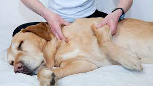
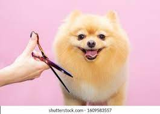
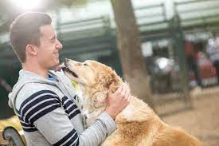

WASH AND DRY
Basic refreshing bath with shampoo or soap, brushing, combing, blow dry, ear cleaning, nails clipping and filling if needed.

MASSAGE
Growing puppies benefit from regular massage around the joints as well as along the limbs. It also helps in preventing sprains and strains by lengthening and toning muscles, tendoms and ligaments.

HAIR TRIM
A complete hair trim on the pets body, followed by basic refreshing bath using shampoo or soap, brushing, combing, blow dry, ear cleaning, nail clipping and filling if needed.

HAIRCUT
A poppy cut, poodle cut, or trim as per your requirement followed by basic refreshing bath with shampoo or soap, brushing, combing, blow dry, ear cleaning, nail clipping and fitting if needed.
MEALS
We follow a proper meal plan prepared by our food experts for your pet during his stay with us.

EXOTIC PET MEDICAL SERVICES
Vast experience with exotics like rabbits, guinea, pigs, birds and lizards. We perform surgeries also at very affordable prices.

ADVANCED DENTAL CARE
We make sure that your pet have healthy teeth and polish to improve quality of life of pet.

PAMPERING
We offer your pet a clean, healthy, hygienic and loving environment to stay, while he is away from you.